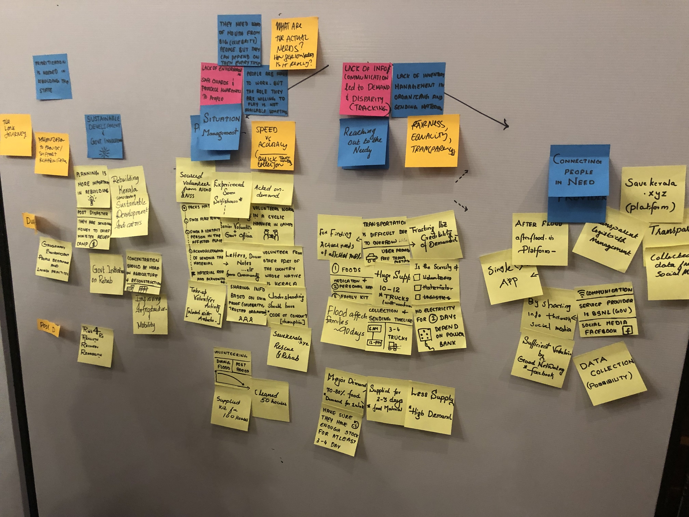
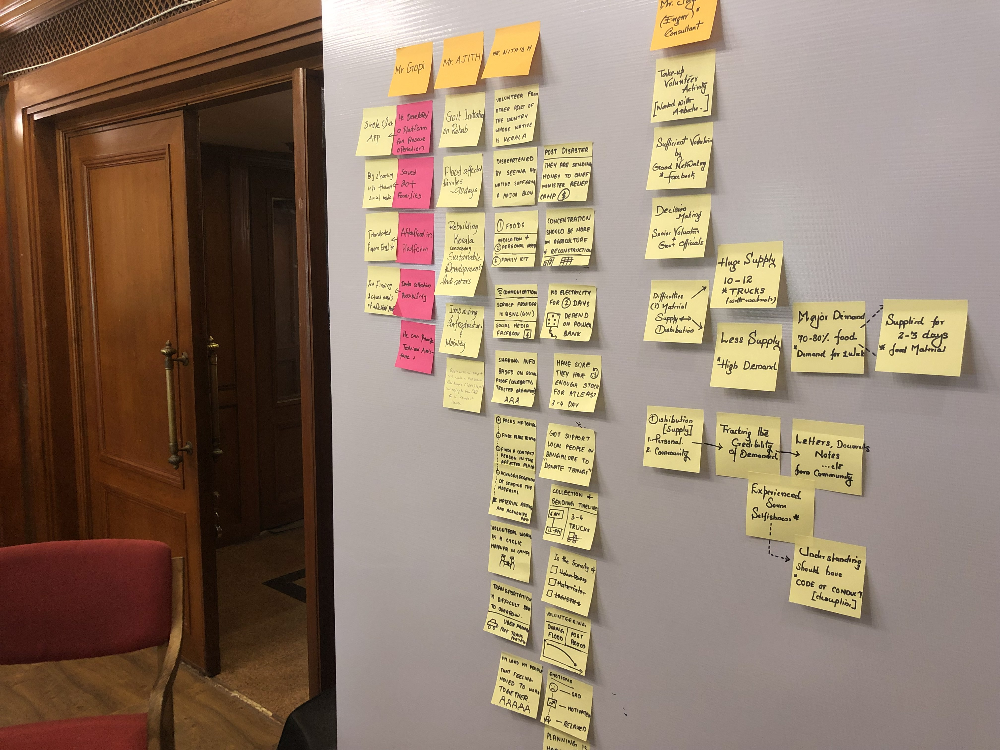
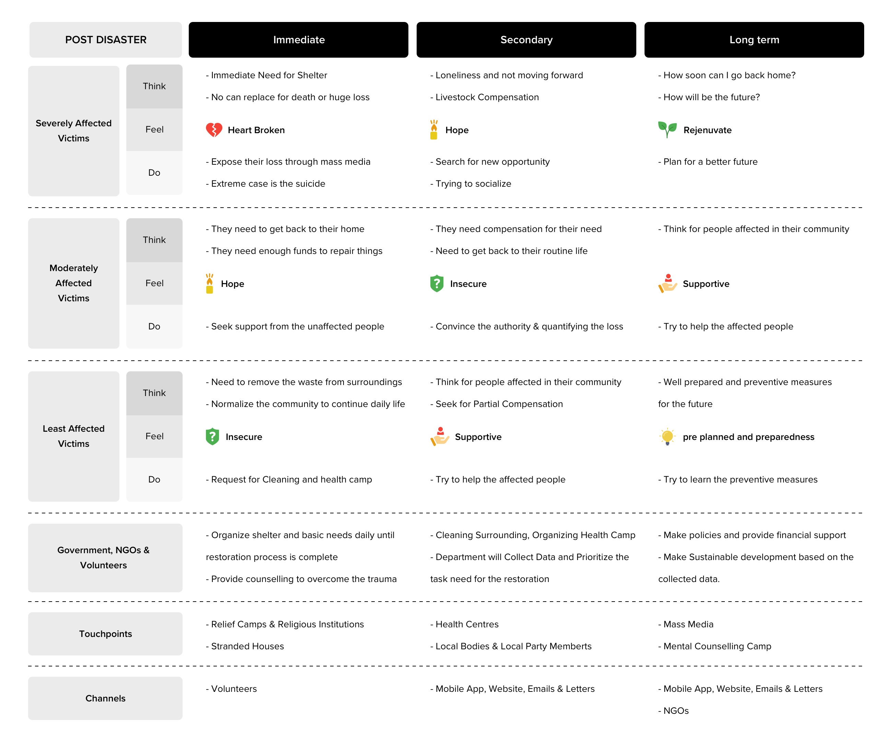
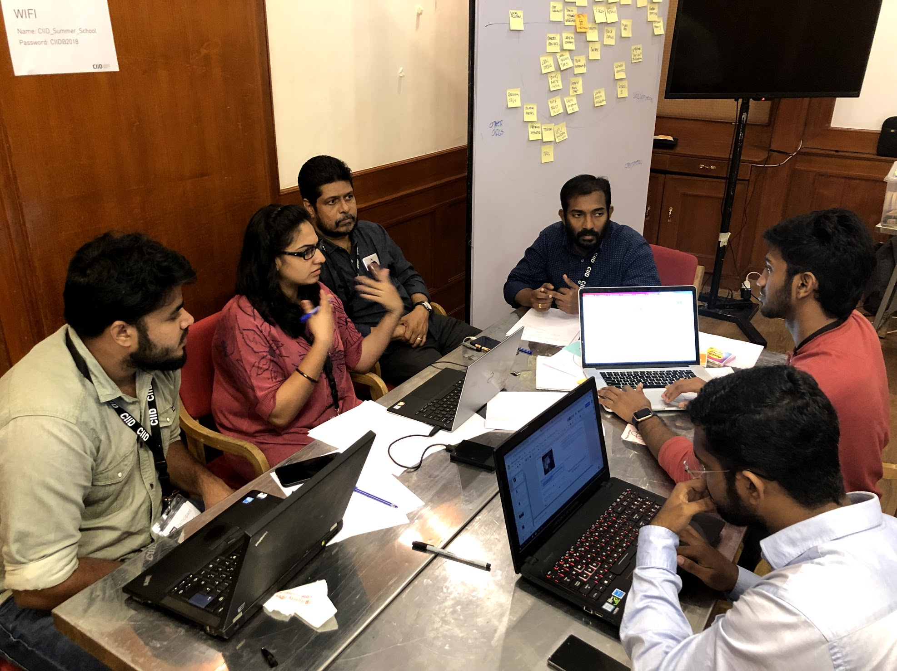
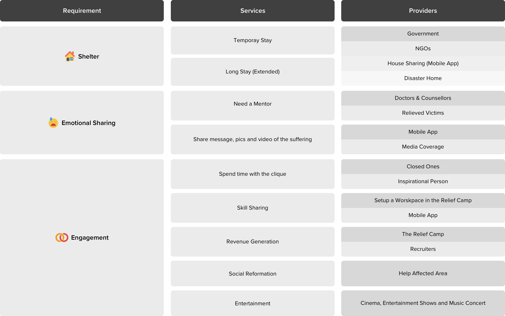

5 Days
Project 1 The Communion
The purpose of this project is to identify the major regrowth areas after the flood had affected the Kerala State in India. The loss of the state have been humongous and there is need for bringing back things to stable. There are lot of people who were affected both physically and mentally. We found that they need a lot of support to bring back to their daily livelihood. The study concentrated on the areas where we can provide better service for the victims such that they have a smooth transition during the course of the rehabilitation.
Class Title Intro to Service Design
Team Size 6 Members
 Service Design Class - Batch Members
Service Design Class - Batch Members We began with the background study to understand the impacts the Kerala floods had created. Then we conducted user interviews among the victims, government officials and NGOs who were involved in the recovery process. We also conducted online surveys to learn more about the key challeneged that the people have faced. Then we clustered and formed themes based on the data we collected from the interviews and surveys.
 
Based on the severity of damage to each individuals, we drew out the support needed at each phase of rehabilitation

Insights we got from the analysis were the loss of mental & financial support post-disaster. And also improper organization since there is a need for “act immediately”
Our team brainstormed both lateral and logical idea in a rapid 20 minutes session

Following are some of the conceptual sketches we came up wtith. Then everyone reviewed reviewed each of these concepts and gave their feedback. Based on that, we finalised one conceptual service design for post-flood rehabilitation
One of the service design conceptual model is Communion
Description Building a temporary community among the people living in various relief camps to share their emotions and skill sets in a productive way. In this model, revenue is generated by the victim which is immediately used by the government and later provided to the individuals once they leave the relief campaign
Value for Citizen Avoid Loneliness; Share Emotions; Spend time in a productive way; Connectivity with new people; Generate Revenue
Value for Government Rehabilitation made easy; Sustainable Development & Job Opportunities; Pestering from the people in the relief camp will be reduced; New/Increased Volunteers; Increased Involvement
